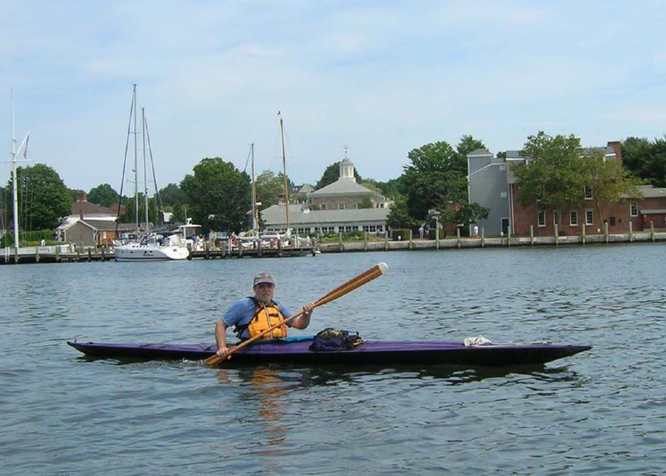

| (New) Sea Tour 17-R by David Long (US) | Menu Previous Page Next Page |
|
 "I am enclosing 2 pictures of my Sea Tour 17-R in the water at Mystic Seaport, Connecticut on Sunday, August 7. This is the first kayak I have ever owned, let alone built. I am delighted with every aspect of the kayak." - David David's Sea Tour 17-R folder ( 17.3ft X 22in / 5.25m X 56cm) has a raised flat aft deck, full deck zipper, and adjustable footbraces. |
|